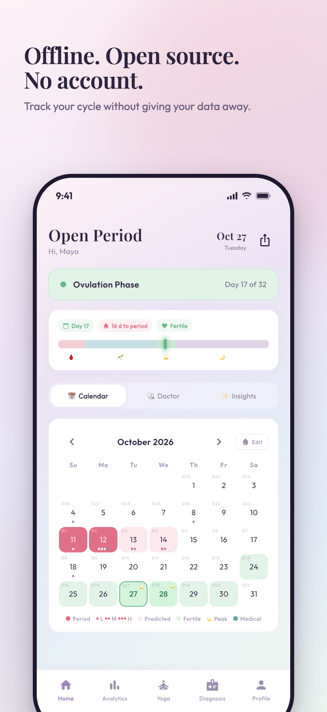
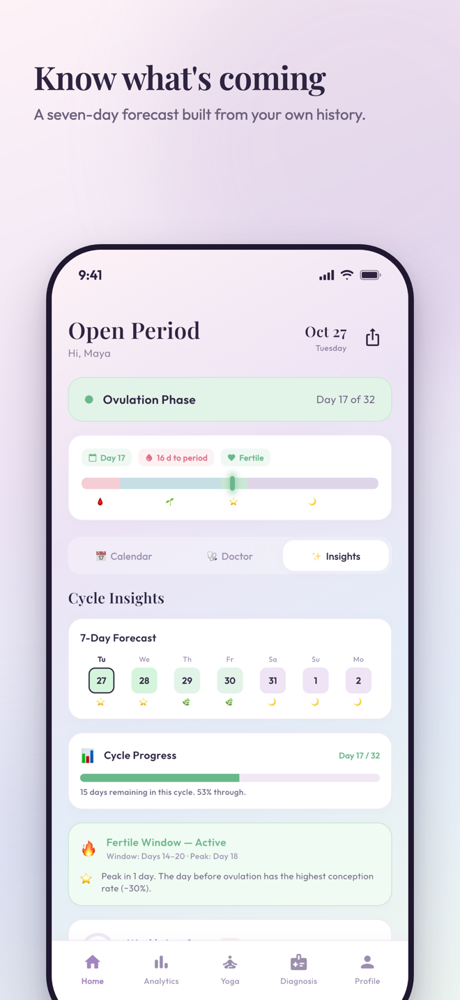
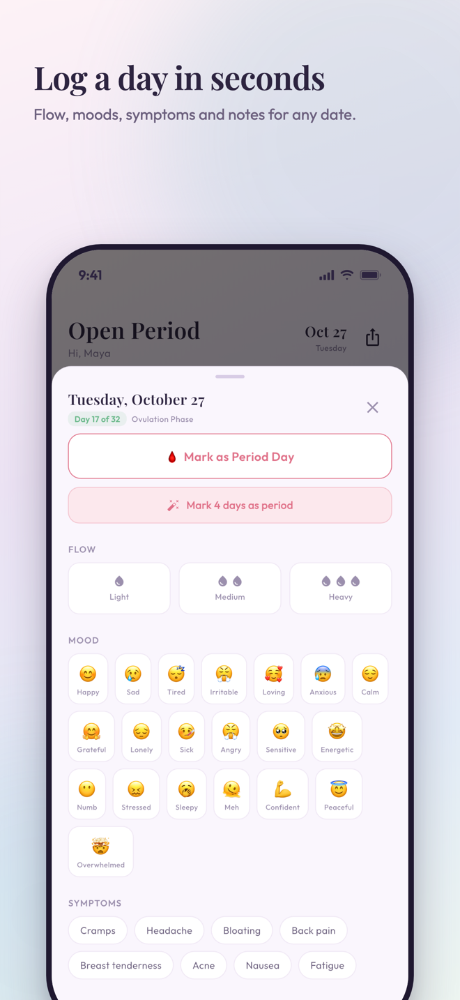
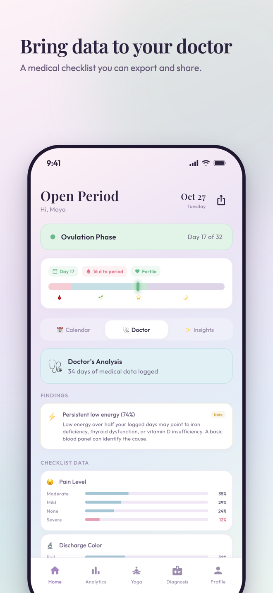
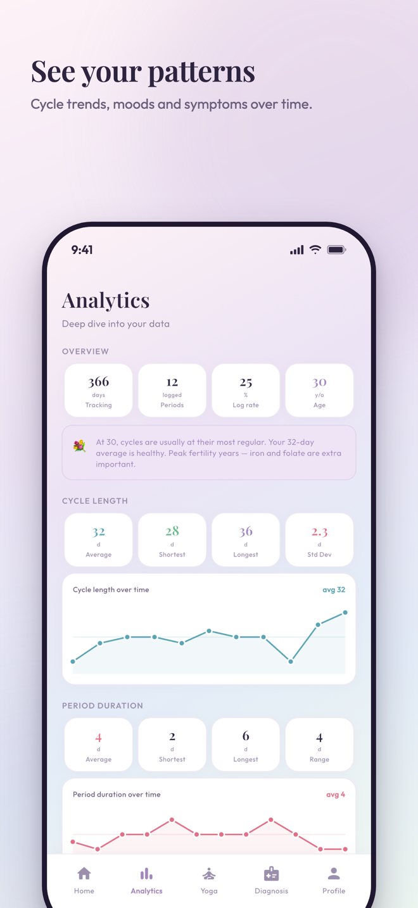
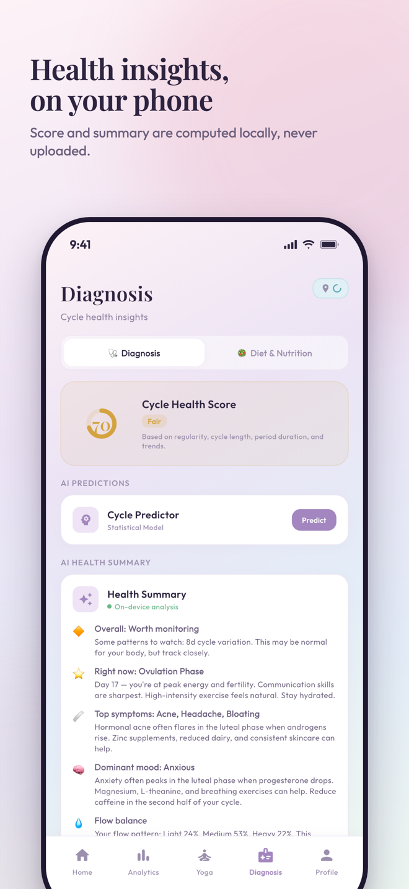
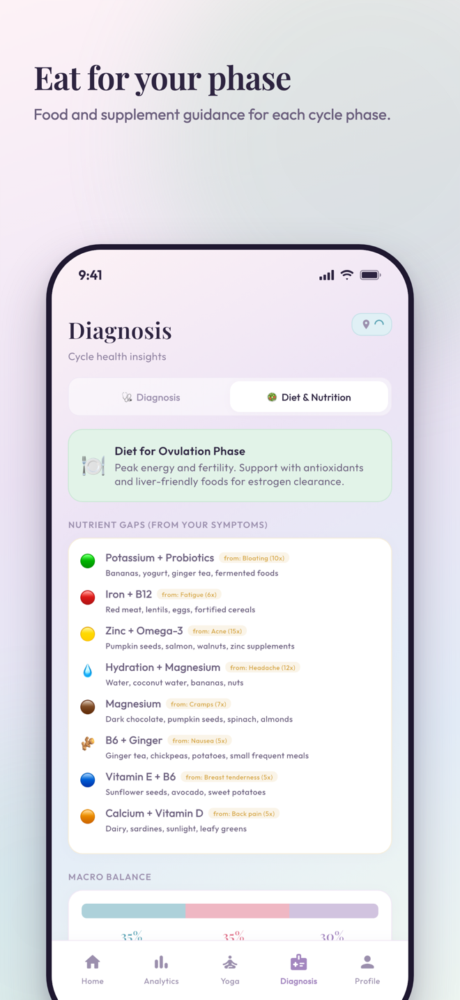
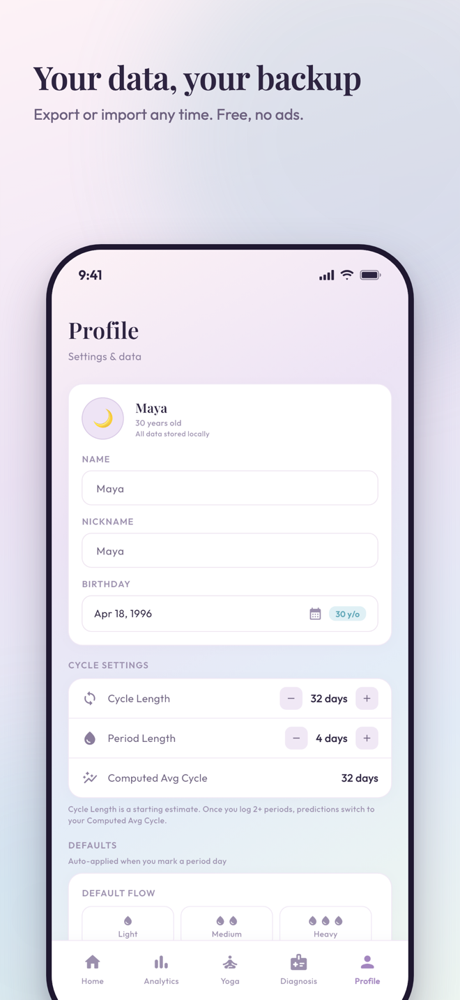

A period tracker that keeps your data to itself.
Open Period Tracker is free and open source. It works offline, needs no account, shows no ads, and stores everything on your own phone.
iOS 13+ and Android 5+. MIT licensed. Listed in the stores as “Open Period & Cycle Tracker”.
Why this one
Four things most period trackers do not promise, stated plainly.
Offline
Tracking, predictions, insights, analytics and backup all run on the device. No server, no sync, no waiting.
No account
No sign-up, no email, no password. The app has nothing to log you into.
Free, no ads
No subscription, no premium tier, no in-app purchase, no advertising SDK.
Open source
Every line is public under the MIT license. Read it, audit it, build it yourself.
What it does
Built for daily logging first, with the analysis layered on top of your own history.
Track
Periods and flow on a calendar. Moods, symptoms and notes for any day. A doctor's checklist covering pain, sleep, skin, digestion, energy and more.
Predict
Next period, fertile window and peak day. An on-device model refines cycle length and period duration from your history. Optional reminders.
Understand
Insights and analytics: best and worst cycle days, mood and symptom frequency, phase correlations, 7-day phase forecast.
Eat and move
Phase-aware diet and nutrition guidance, with regional food picks if you share your location. Yoga and breathwork matched to each phase.
Ask an AI, on your terms
Build an anonymised summary of your logs to paste into ChatGPT, Claude or Gemini. Or point the app at your own Ollama server.
Keep control
JSON backup and restore. A demo-data generator to explore the app before you log anything real.
Screens
Swipe to see more.








Questions
Short answers. The privacy policy has the long ones.
Does it work offline?
Yes. Every feature runs on the device. No connection is required for tracking, predictions, insights, analytics or backup.
Do I need an account?
No. There is no sign-up, login or email. Open the app and start logging.
What does it cost?
Nothing. The app is free with no subscription, premium tier, in-app purchase or advertising.
Can I export my data?
Yes. Profile → Backup exports a JSON file you can keep anywhere and restore later on any device.
Where is the source code?
On GitHub under the MIT license.
Does it send my data anywhere?
No. The app runs no servers and includes no analytics or advertising SDKs. Your logs stay in a local database on the device. Three optional features touch the network only if you use them: opening YouTube links from the Yoga tab, the operating system's geocoder to pick a food region when you grant location access, and an Ollama server you configure yourself for local AI summaries.
Is it medical advice?
No. Open Period Tracker is a tracking and information tool, not a medical device. Talk to a healthcare professional about anything that concerns you.